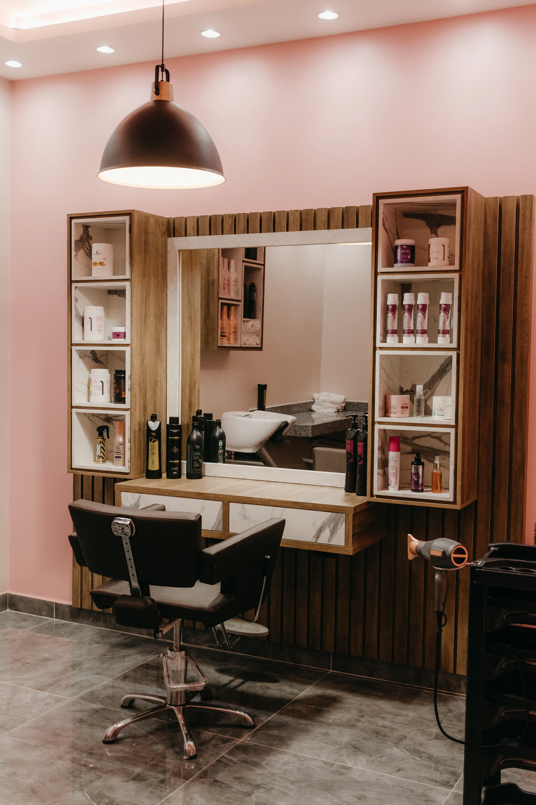

Cut & shape
Consultation, wash, cut, and styling notes. Allow 60 minutes.
Independent cut & color studio
Shape, color, and styling built around how you actually wear your hair. Start with the service that feels closest to what you want.
Explore the service menu
Three details help a stylist turn an inspiration photo into a cut or color you can maintain.
Choose a service and the part of the day that suits you. A real salon would confirm timing and pricing before booking.
Start with a color consultation if you’re unsure how much change you want or how often you can come back.
Choose the color service in the planner. A stylist would confirm the combined appointment length before booking.
A stylist would confirm the scope and quote after discussing your hair history, length, and desired result.